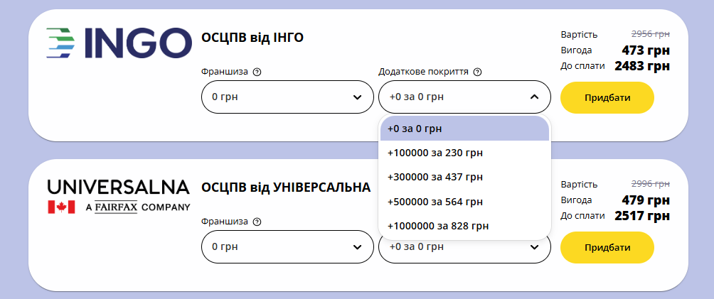

Поліс ДЦВ — Надійний захист понад ліміти ОСЦПВ
ДЦВ (добровільна цивільна відповідальність) — це додатковий страховий поліс, який розширює ліміти виплат за обов’язковим ОСЦПВ (автоцивілкою). Така страховка особливо актуальна для водіїв, які хочуть убезпечити себе від фінансових ризиків у разі великого ДТП.

auto ins, автоинс, аутоинс, ауто инс, autoins, автоинс, авто инс, автоінс, авто інс, ауто інс,
Що таке поліс ДЦВ?
Обов’язковий поліс ОСЦПВ передбачає ліміти виплат: 160 000 грн на відшкодування збитків майну. 320 000 грн на компенсацію шкоди життю або здоров’ю постраждалих.
З 2025 року суми відшколування будуть збільшені згідно з новим законом про автоцивілку
Однак цих сум часто недостатньо, особливо в умовах великих міст, де багато дорогих автомобілів. Поліс ДЦВ покриває ці ризики, забезпечуючи додатковий страховий захист.
Ліміт виплат за ДЦВ:
Можливе розширення від 100 000 грн до 2 000 000 грн.
Переваги поліса ДЦВ
-
Добровільний характер:
Ви самі вирішуєте, чи потрібна вам додаткова страховка.
-
Гнучкість ліміту:
Ліміт покриття можна вибрати самостійно в межах доступних сум.
-
Відсутність франшизи:
Всі збитки, які перевищують ліміти ОСЦПВ, компенсуються без додаткових витрат.
-
Незалежність від ОСЦПВ:
Поліс ДЦВ можна придбати в іншій страховій компанії, ніж ОСЦПВ.
-
Доступна ціна:
Вартість ДЦВ значно нижча, ніж ОСЦПВ.
А також на нашому сервісі сума знижки за полісом ОСЦПВ часто перекриває вартість ДЦВ, тож ви отримуєте його фактично безкоштовно!
-
Простота оформлення:
Поліс можна оформити в будь-який момент дії автоцивілки, достатньо звернутись до наших спеціалістів.
Як працює поліс ДЦВ у разі ДТП?
У разі ДТП спочатку використовується поліс ОСЦПВ для покриття збитків. Якщо суми виплат за ОСЦПВ недостатньо, на допомогу приходить поліс ДЦВ, який покриває залишок витрат у межах додаткового ліміту.
Приклад:
Якщо збитки у ДТП становлять 400 000 грн:
-
ОСЦПВ компенсує 160 000 грн (максимальний ліміт на майно).
-
ДЦВ покриє решту 240 000 грн.
Як оформити поліс ДЦВ?
Оберіть автоцивілку з додатковим покриттям (ДЦВ)
Оберіть суму додаткового покриття, поліс ДЦВ автоматично оформиться разом з автоцивілкою
Якщо Ви оформили поліс автоцивілки без додаткового покриття, а потім вирішили його дооформити - наші спеціалісти залюбки допоможуть Вам.
Оформити автоцивілкуЧасті запитання про поліс ДЦВ
Чи обов’язково оформляти ДЦВ?
Ні, це добровільна страховка, але вона забезпечує додатковий фінансовий захист у разі великого ДТП.
Чи можу я оформити ДЦВ в іншій страховій компанії?
Так, ДЦВ не обов’язково має бути оформлений у тій самій компанії, що й ОСЦПВ.
Скільки коштує ДЦВ?
Ціна залежить від обраного ліміту покриття, але в середньому вона значно нижча за ОСЦПВ.
Чи діє поліс ДЦВ за кордоном?
Поліс ДЦВ діє лише в межах України. Для закордонних поїздок необхідно оформити поліс «Зелена карта».